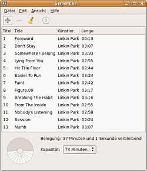

Serpentine
Archivierte Anleitung
Dieser Artikel wurde archiviert, da er - oder Teile daraus - nur noch unter einer älteren Ubuntu-Version nutzbar ist. Diese Anleitung wird vom Wiki-Team weder auf Richtigkeit überprüft noch anderweitig gepflegt. Zusätzlich wurde der Artikel für weitere Änderungen gesperrt.
Zum Verständnis dieses Artikels sind folgende Seiten hilfreich:
Serpentine  ist ein Brennprogamm, welches auf das Erstellen von Audio-CDs bzw. Audio-DVDs spezialisiert ist. So kann man aus MP3 oder OGG Dateien wieder eine Audio-CD erstellen, die man in einem herkömmlichen CD-Spieler ohne MP3-Funktion abspielen kann.
ist ein Brennprogamm, welches auf das Erstellen von Audio-CDs bzw. Audio-DVDs spezialisiert ist. So kann man aus MP3 oder OGG Dateien wieder eine Audio-CD erstellen, die man in einem herkömmlichen CD-Spieler ohne MP3-Funktion abspielen kann.
Einige Merkmale sind:
Einfache und klare Bedienung
Nutzt das GStreamer-Framework, d.h. es wird eine Vielzahl von Audioformaten unterstützt
Kann PLS, M3U und XSPF Playlisten lesen und schreiben
Liest Rhythmbox Playlisten

Ab Ubuntu 8.04 ist Serpentine durch Brasero ersetzt worden.
Installation¶
Serpentine kann bis einschließlich Ubuntu 9.10 über das Paket
serpentine, universe [2]
installiert werden [1]. Serpentine wird unter Ubuntu über
"Anwendungen -> Unterhaltungsmedien -> Serpentine Audio-CD Ersteller"
gestartet.
Nutzung¶
Um einen Audiodatei für die zu brennende CD hinzuzufügen wählt man "Edit -> Hinzufügen" bzw. klickt, bei eingeblendeter Werkzeugleiste, direkt auf "Hinzufügen". Will man einen Titel entfernen, wählt man "Edit -> Entfernen" bzw. klickt auf "Entfernen". Will man die gesamte Zusammenstellung löschen, so wählt man "Edit -> Leeren" bzw. klickt auf "Leeren". Möchte man die Zusammenstellung nun zusätzlich als Playliste sichern, so wählt man "Datei -> Wiedergabeliste speichern unter..."
Will man eine Playliste als Audio-CD brennen, so öffnet man über "Datei -> Wiedergabeliste importieren" die entsprechende Playlist. Genauso kann man über den Menüpunkt "Datei -> Öffne Rhythmbox Wiedergabeliste" verfahren.
Im unteren Teil des Fensters sieht man die aktuelle Belegung der CD und wie viel Platz noch übrig ist. Außerdem kann hier eingestellt, werden, wie viel Minuten auf die CD / DVD gebrannt werden können bzw. sollen.
Unter "Edit -> Einstellungen" kann man einige (wenige) Einstellungen vornehmen, nämlich:
Das Laufwerk wählen
Die Schreibgeschwindigkeit wählen
Festlegen, ob zwischen zwei Audiodateien eine 2 Sekunden Pause eingefügt wird
Festlegen, ob die CD nach dem Brennen automatisch ausgeworfen werden soll
Den Brennvorgang kann man nun über "Datei -> auf CD/DVD schreiben" bzw. einen Klick auf "auf CD/DVD schreiben" starten.
Brennen via Kommandozeile¶
Serpentine lässt sich auch über die Kommandozeile nutzten. Der Befehl [3]
serpentine -w audio1.mp3 audio2.ogg liste.pls audio4.wav
Schreibt die genannten Audio-Dateien sowie alle Dateien, die in der Playliste enthalten sind auf CD / DVD. Wie man sieht, können Dateiformate und Playlisten beliebig gemischt werden.
Serpentine kennt noch einige wenige Optionen mehr, diese findet man in den Manpages von Serpentine.
- Erstellt mit Inyoka
-
 2004 – 2017 ubuntuusers.de • Einige Rechte vorbehalten
2004 – 2017 ubuntuusers.de • Einige Rechte vorbehalten
Lizenz • Kontakt • Datenschutz • Impressum • Serverstatus -
Serverhousing gespendet von